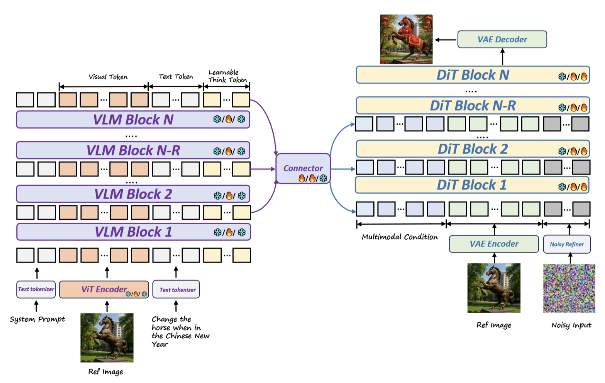

DeepGen Overview


Method Overview.
DeepGen 1.0 adopts a unified VLM–DiT framework with dual-branch visual encoding: a ViT provides semantic features, while a VAE extracts latent representations for the DiT. Multimodal VLM conditions and reference-image VAE latents are concatenated with target noise tokens as a single DiT sequence, enabling joint self-attention over conditioning and generation. Stacked Channel Bridging (SCB) fuses VLM and DiT features, and positional encodings distinguish reference from target tokens. Icons denote frozen/trainable modules across pre-training, SFT, and RL.